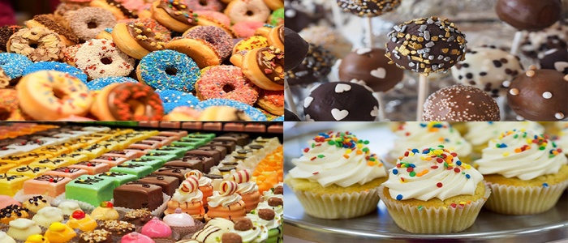
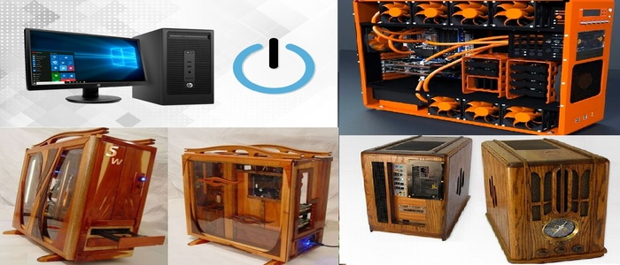
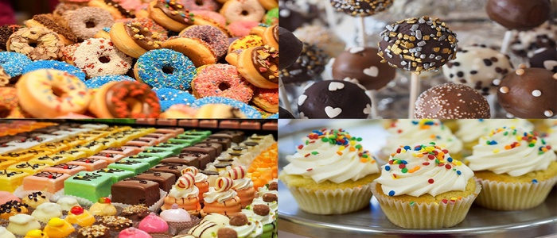
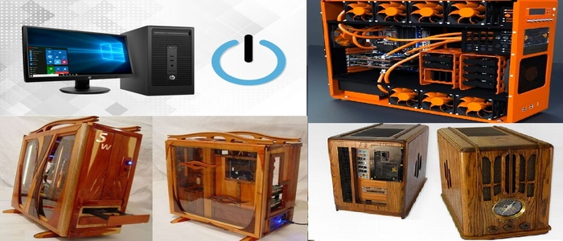

David Osuna
Estudiante de Ing. Informática
Venezuela
Trabajos Realizados
Cheft de eventos, Chocolatero, Bartender, Coralista, Disarrollador web y Reparador de ordenadores.
Pasiones y gustos
Me gusta la reparación y el ensamblaje de ordenadores, así como el desarrollo web.
Actualmente me estoy formando en el desarrollo de videojuegos y en robótica.
Soy amante de la cocina y la licorería; he aprendido y lo seguiré haciendo gracias a compañeros, cursos y YouTube.
Me gusta viajar para conocer la cultura y religión de diferentes países.